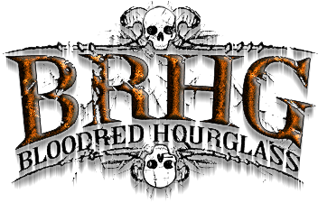

|
|
Rotting Christ |
Bloodred Hourglass is a Finnish Melodic Death Metal band from Mikkeli formed in 2005. They are primarily rooted in melodic death metal, although they also have elements of thrash metal in their sound. They debuted with their first demo, Relevant Annihilation. After releasing three EPs, they released their debut album, Lifebound. It was followed up by the it sophomore output, Where The Oceans Burn. Next was the single, Quiet Complaint, then their third full-length, Heal, released in 2017. |
Bloodred Hourglass |
 |
Back to main page |
|
Powered by Alex, 2023 |
|